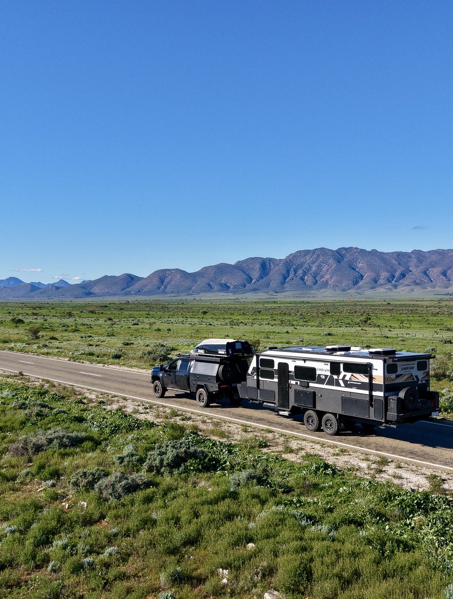
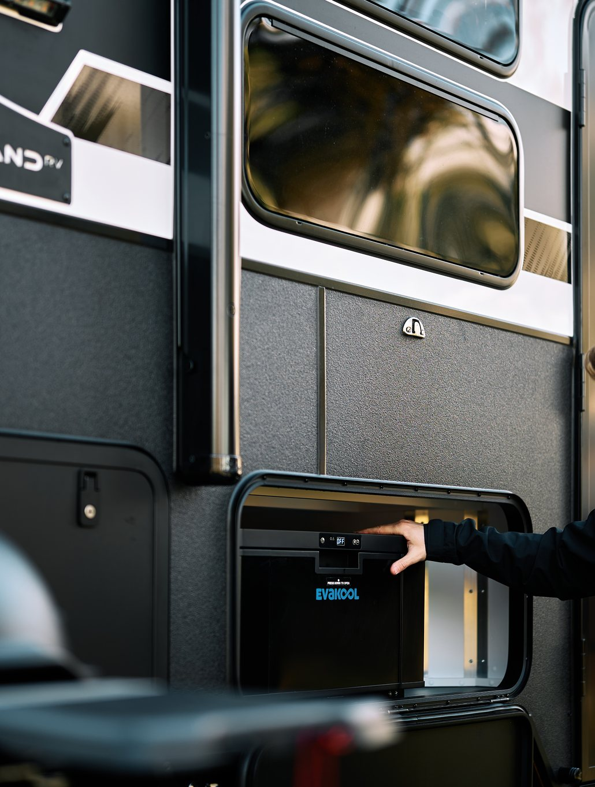
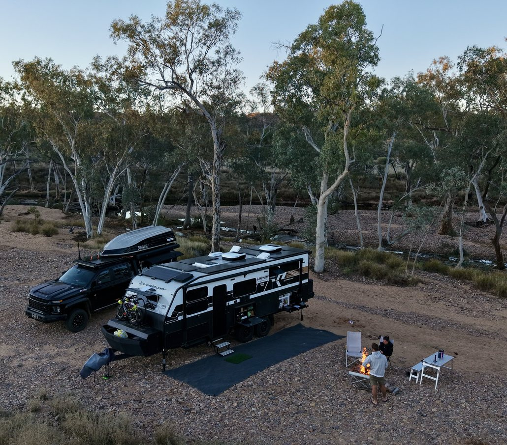
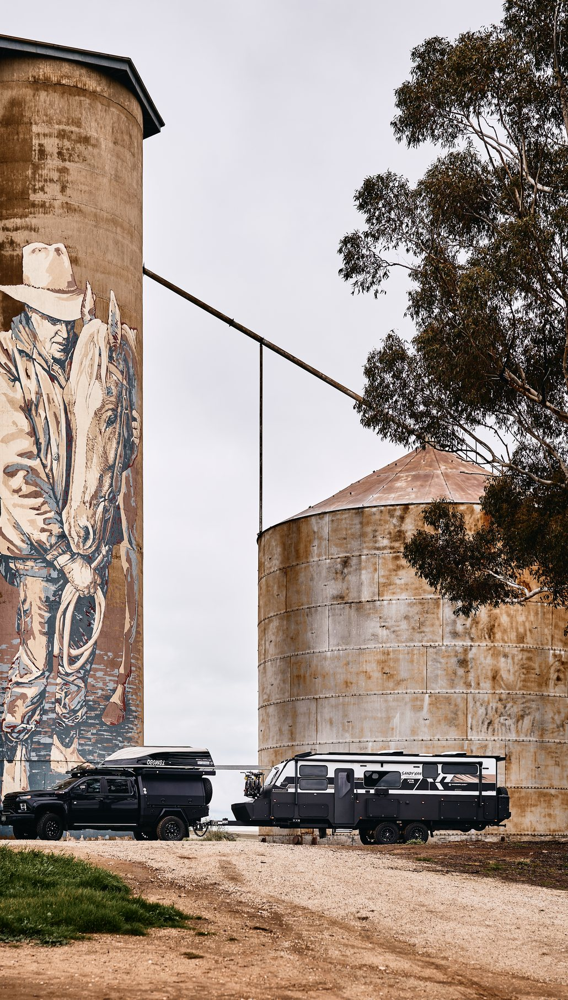
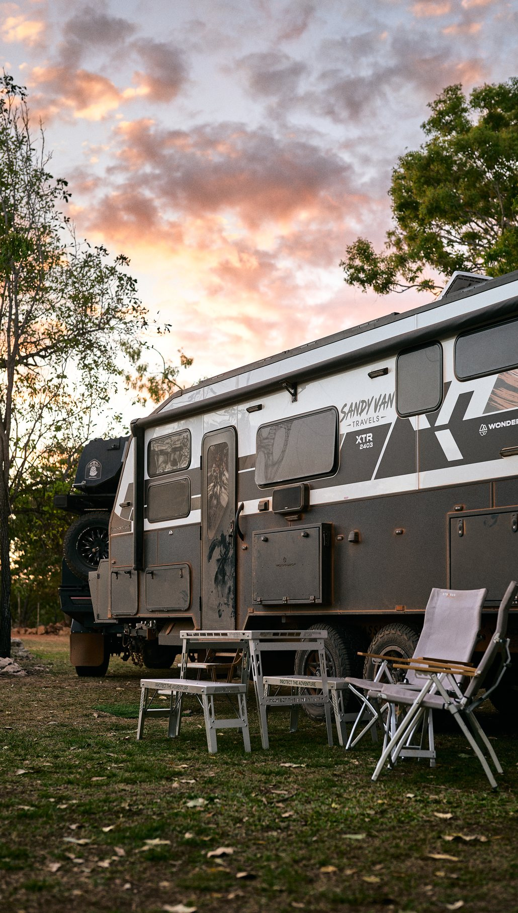
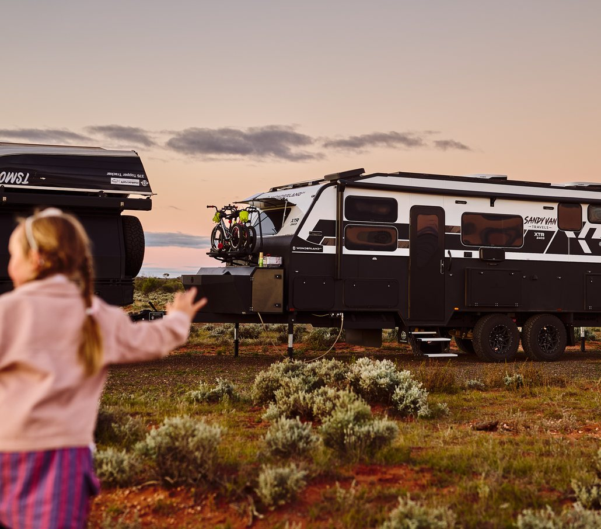

How do you fit everything in your caravan? Any clever storage ideas?
Living full-time in a caravan with three kids definitely teaches you to be intentional about what you own. Everything has a home, and if it doesn’t have a purpose, it doesn’t travel with us. We’ve learnt that smart caravan design makes all the difference, functional space, dedicated storage spaces and keeping everyday items easy to access. We also use storage tubs to keep everyone’s gear organised, everything has a place and is put away when not in use.
What are your go-to meals when caravanning? Do you have any favourite camping recipes that you’d like to share?
We do around 99% of our cooking outside and absolutely love it. Some of our family favourites are anything Mexican, Italian, slow-cooked curries and fresh seafood whenever we’re lucky enough to catch it ourselves. Cooking outdoors has become one of our favourite parts of travelling. We have the Panasonic 4 in 1 Microwave Convection oven built inside the van (we also had this in our first van and loved it, so we wanted it again). We also have a Wolstead 14-1 multi cooker, a TM7 and a Weber.
What’s the coolest thing you’ve found on your travels? Any hidden gems or off-the-beaten-path places?
It’s impossible to choose just one. Spending three months at Ningaloo Reef is a memory we’ll never forget. Watching our kids fall in love with fishing, snorkelling, exploring the beaches and spending every day outdoors reminded us exactly why we chose this lifestyle. The biggest surprise, though, has been discovering that some of Australia’s best places aren’t the famous ones. They’re the unexpected campsites, quiet beaches and little towns you stumble across because you decided to take the scenic route.
What are your must-have caravanning essentials? Any unexpected items that have become indispensable on your travels?
Reliable off-grid power is a big one for us, along with Starlink so we can keep running our photography business from the road. Our camera gear travels everywhere with us, and with three active kids we have bikes and scooters. We also love our campfires and comfortable camp chairs.